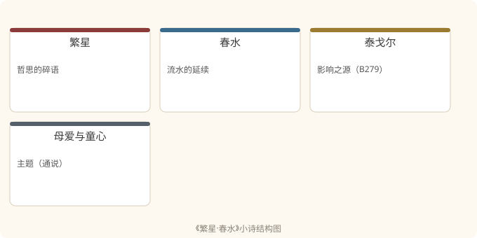

繁星·春水
一、基本信息
| 作者 | 冰心 |
|---|---|
| 成书/出版 | 1923年出版（通说待核；Britannica B279 该页未载——仅记其受泰戈尔影响的抒情之作一举成名） Bingxin — Encyclopaedia Britannica（百科全书） |
| 国别/地区 | 中国 |
| 时代 | 现当代 · 现代 |
| 体裁 | 小诗集 |
| 语言 | 汉语（白话） |

《繁星·春水》小诗结构图（主题·结构图）
二、创作背景
Britannica（B279）：冰心'lyrical pieces about childhood and nature, influenced by the Indian poet Rabindranath Tagore'——受泰戈尔影响的童年与自然抒情之作使她'won her instant fame'（一举成名）并获卫斯理学院奖学金。
'冰心体'（通说待核）：小诗体——受泰戈尔《飞鸟集》影响的短诗。
三、内容脉络
《繁星》：零碎的哲思小诗（通说待核）。
《春水》：延续的春水之思（通说待核）。
四、主要人物表
| 人物 | 身份 | 说明 |
|---|---|---|
| 冰心 | 诗人 | '温柔、忧郁'（B279） |
五、主题与艺术特点
- 母爱与童心（通说）。
- 泰戈尔式小诗体（B279：influenced by Tagore）。
- '哲学的'小诗（通说待核）。
六、影响与评论
- Britannica：受泰戈尔影响的抒情之作使冰心一举成名（B279）。
Bingxin — Encyclopaedia Britannica（百科全书） - 作者页：冰心为广受欢迎的中国作家（B279 作者级定位）。
Bingxin — Encyclopaedia Britannica（百科全书）
七、阅读建议
难点
- 小诗体的断片。
- '冰心体'语言。
- 《繁星·春水》（人民文学出版社/商务印书馆版本，通说待核）。
对照泰戈尔《飞鸟集》（B261 作者受其影响——互证）。
八、待核实
- 《繁星》《春水》1923年出版细节核对。
- 篇数（繁星164/春水182说）待核。
- '冰心体'术语出处待核。
本页主要来源
冰心的其他收录作品：繁星·春水